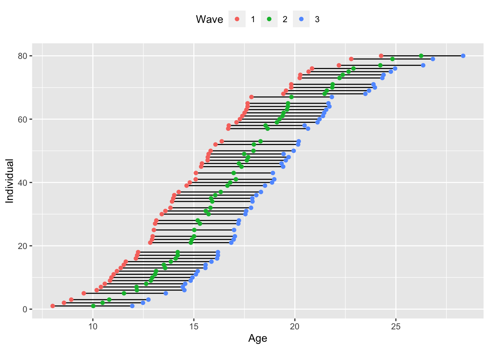

Time Structure
Thinking more deeply about time in longitudinal models
single.cohort = read.csv('data/02-single-cohort.csv')
multiple.cohort = read.csv('data/02-multiple-cohort.csv')
accelerated = read.csv('data/02-accelerated.csv')Assessment Schedules
Single Cohort Data
set.seed(12345)
ggplot2::ggplot(single.cohort %>% filter(id %in% sample(id, 50)) %>%
pivot_longer(cols=starts_with('age'),
names_to = c('.value', 'wave'),
names_pattern = '(.+)(.)'),
aes(x = age, y = id)) +
geom_line(aes(group = id), size = .5) +
geom_point(aes(color = as.factor(wave))) +
labs(x = 'Age', y = 'Individual', color = 'Wave') +
theme(legend.position = 'top')
linear.lcm = 'int =~ 1*dlpfc1 + 1*dlpfc2 + 1*dlpfc3 + 1*dlpfc4
slp =~ 0*dlpfc1 + 1*dlpfc2 + 2*dlpfc3 + 3*dlpfc4'
lcm = lavaan::growth(linear.lcm,
data = single.cohort,
estimator = 'ML',
missing='FIML')
summary(lcm, fit.measures = TRUE, standardize = TRUE, rsquare = TRUE)## lavaan 0.6-9 ended normally after 22 iterations
##
## Estimator ML
## Optimization method NLMINB
## Number of model parameters 9
##
## Number of observations 50
## Number of missing patterns 5
##
## Model Test User Model:
##
## Test statistic 12.140
## Degrees of freedom 5
## P-value (Chi-square) 0.033
##
## Model Test Baseline Model:
##
## Test statistic 72.730
## Degrees of freedom 6
## P-value 0.000
##
## User Model versus Baseline Model:
##
## Comparative Fit Index (CFI) 0.893
## Tucker-Lewis Index (TLI) 0.872
##
## Loglikelihood and Information Criteria:
##
## Loglikelihood user model (H0) -248.174
## Loglikelihood unrestricted model (H1) -242.104
##
## Akaike (AIC) 514.347
## Bayesian (BIC) 531.555
## Sample-size adjusted Bayesian (BIC) 503.306
##
## Root Mean Square Error of Approximation:
##
## RMSEA 0.169
## 90 Percent confidence interval - lower 0.045
## 90 Percent confidence interval - upper 0.293
## P-value RMSEA <= 0.05 0.055
##
## Standardized Root Mean Square Residual:
##
## SRMR 0.113
##
## Parameter Estimates:
##
## Standard errors Standard
## Information Observed
## Observed information based on Hessian
##
## Latent Variables:
## Estimate Std.Err z-value P(>|z|) Std.lv Std.all
## int =~
## dlpfc1 1.000 0.794 0.832
## dlpfc2 1.000 0.794 0.773
## dlpfc3 1.000 0.794 0.772
## dlpfc4 1.000 0.794 0.650
## slp =~
## dlpfc1 0.000 0.000 0.000
## dlpfc2 1.000 0.234 0.228
## dlpfc3 2.000 0.468 0.455
## dlpfc4 3.000 0.703 0.575
##
## Covariances:
## Estimate Std.Err z-value P(>|z|) Std.lv Std.all
## int ~~
## slp -0.045 0.097 -0.467 0.641 -0.243 -0.243
##
## Intercepts:
## Estimate Std.Err z-value P(>|z|) Std.lv Std.all
## .dlpfc1 0.000 0.000 0.000
## .dlpfc2 0.000 0.000 0.000
## .dlpfc3 0.000 0.000 0.000
## .dlpfc4 0.000 0.000 0.000
## int 0.628 0.132 4.761 0.000 0.791 0.791
## slp 0.114 0.054 2.120 0.034 0.487 0.487
##
## Variances:
## Estimate Std.Err z-value P(>|z|) Std.lv Std.all
## .dlpfc1 0.280 0.196 1.427 0.154 0.280 0.307
## .dlpfc2 0.459 0.140 3.275 0.001 0.459 0.435
## .dlpfc3 0.389 0.128 3.039 0.002 0.389 0.368
## .dlpfc4 0.640 0.278 2.302 0.021 0.640 0.428
## int 0.631 0.207 3.039 0.002 1.000 1.000
## slp 0.055 0.054 1.010 0.313 1.000 1.000
##
## R-Square:
## Estimate
## dlpfc1 0.693
## dlpfc2 0.565
## dlpfc3 0.632
## dlpfc4 0.572broom::tidy(lcm) %>% knitr::kable()| term | op | estimate | std.error | statistic | p.value | std.lv | std.all | std.nox |
|---|---|---|---|---|---|---|---|---|
| int =~ dlpfc1 | =~ | 1.0000000 | 0.0000000 | NA | NA | 0.7940412 | 0.8323286 | 0.8323286 |
| int =~ dlpfc2 | =~ | 1.0000000 | 0.0000000 | NA | NA | 0.7940412 | 0.7734266 | 0.7734266 |
| int =~ dlpfc3 | =~ | 1.0000000 | 0.0000000 | NA | NA | 0.7940412 | 0.7718441 | 0.7718441 |
| int =~ dlpfc4 | =~ | 1.0000000 | 0.0000000 | NA | NA | 0.7940412 | 0.6498139 | 0.6498139 |
| slp =~ dlpfc1 | =~ | 0.0000000 | 0.0000000 | NA | NA | 0.0000000 | 0.0000000 | 0.0000000 |
| slp =~ dlpfc2 | =~ | 1.0000000 | 0.0000000 | NA | NA | 0.2342260 | 0.2281451 | 0.2281451 |
| slp =~ dlpfc3 | =~ | 2.0000000 | 0.0000000 | NA | NA | 0.4684521 | 0.4553567 | 0.4553567 |
| slp =~ dlpfc4 | =~ | 3.0000000 | 0.0000000 | NA | NA | 0.7026781 | 0.5750458 | 0.5750458 |
| dlpfc1 ~~ dlpfc1 | ~~ | 0.2796138 | 0.1959794 | 1.4267507 | 0.1536518 | 0.2796138 | 0.3072290 | 0.3072290 |
| dlpfc2 ~~ dlpfc2 | ~~ | 0.4589404 | 0.1401353 | 3.2749802 | 0.0010567 | 0.4589404 | 0.4354200 | 0.4354200 |
| dlpfc3 ~~ dlpfc3 | ~~ | 0.3889671 | 0.1280032 | 3.0387293 | 0.0023758 | 0.3889671 | 0.3675243 | 0.3675243 |
| dlpfc4 ~~ dlpfc4 | ~~ | 0.6397657 | 0.2778724 | 2.3023728 | 0.0213142 | 0.6397657 | 0.4284626 | 0.4284626 |
| int ~~ int | ~~ | 0.6305014 | 0.2074521 | 3.0392633 | 0.0023716 | 1.0000000 | 1.0000000 | 1.0000000 |
| slp ~~ slp | ~~ | 0.0548618 | 0.0543242 | 1.0098967 | 0.3125448 | 1.0000000 | 1.0000000 | 1.0000000 |
| int ~~ slp | ~~ | -0.0451430 | 0.0967540 | -0.4665746 | 0.6408043 | -0.2427236 | -0.2427236 | -0.2427236 |
| dlpfc1 ~1 | ~1 | 0.0000000 | 0.0000000 | NA | NA | 0.0000000 | 0.0000000 | 0.0000000 |
| dlpfc2 ~1 | ~1 | 0.0000000 | 0.0000000 | NA | NA | 0.0000000 | 0.0000000 | 0.0000000 |
| dlpfc3 ~1 | ~1 | 0.0000000 | 0.0000000 | NA | NA | 0.0000000 | 0.0000000 | 0.0000000 |
| dlpfc4 ~1 | ~1 | 0.0000000 | 0.0000000 | NA | NA | 0.0000000 | 0.0000000 | 0.0000000 |
| int ~1 | ~1 | 0.6284401 | 0.1320054 | 4.7607134 | 0.0000019 | 0.7914452 | 0.7914452 | 0.7914452 |
| slp ~1 | ~1 | 0.1139803 | 0.0537695 | 2.1197937 | 0.0340234 | 0.4866253 | 0.4866253 | 0.4866253 |
semPlot::semPaths(lcm,
intercepts = TRUE,
edge.color = 'black') Notes: not sure we need to re-show all the models since all the canonical ones are on single-cohort data
Notes: not sure we need to re-show all the models since all the canonical ones are on single-cohort data
Multiple Cohort Data
ggplot(multiple.cohort %>% filter(id %in% sample(id, 50)) %>%
pivot_longer(cols=starts_with('monthage'),
names_to = c('.value', 'wave'),
names_pattern = '(.+)(.)'),
aes(x = monthage, y = id)) +
geom_line(aes(group = id), size = .5) +
geom_point(aes(color = as.factor(wave), shape = factor(cohort)), size=2) +
labs(x = 'Age (in Months)', y = 'Individual', color = 'Wave', shape = 'Cohort') +
theme(legend.position = 'top') + guides(color = 'none')## Warning: Removed 246 row(s) containing missing values (geom_path).## Warning: Removed 246 rows containing missing values (geom_point).
linear.lcm = 'int =~ 1*fpct6 + 1*fpct8 + 1*fpct10 + 1*fpct12 + 1*fpct14 +
1*fpct16 + 1*fpct18 + 1*fpct20
slp =~ 0*fpct6 + 1*fpct8 + 2*fpct10 + 3*fpct12 + 4*fpct14 +
5*fpct16 + 6*fpct18 + 7*fpct20'
lcm = lavaan::growth(linear.lcm,
data = multiple.cohort,
estimator = 'ML',
missing='FIML')## Warning in lav_data_full(data = data, group = group, cluster = cluster, : lavaan WARNING: due to
## missing values, some pairwise combinations have less than 10% coverage## Warning in lav_mvnorm_missing_h1_estimate_moments(Y = X[[g]], wt = WT[[g]], : lavaan WARNING:
## Maximum number of iterations reached when computing the sample
## moments using EM; use the em.h1.iter.max= argument to increase the
## number of iterationssummary(lcm, fit.measures = TRUE, standardize = TRUE, rsquare = TRUE)## lavaan 0.6-9 ended normally after 51 iterations
##
## Estimator ML
## Optimization method NLMINB
## Number of model parameters 13
##
## Number of observations 405
## Number of missing patterns 40
##
## Model Test User Model:
##
## Test statistic 43.254
## Degrees of freedom 31
## P-value (Chi-square) 0.071
##
## Model Test Baseline Model:
##
## Test statistic 331.344
## Degrees of freedom 28
## P-value 0.000
##
## User Model versus Baseline Model:
##
## Comparative Fit Index (CFI) 0.960
## Tucker-Lewis Index (TLI) 0.964
##
## Loglikelihood and Information Criteria:
##
## Loglikelihood user model (H0) -2442.146
## Loglikelihood unrestricted model (H1) -2420.520
##
## Akaike (AIC) 4910.293
## Bayesian (BIC) 4962.343
## Sample-size adjusted Bayesian (BIC) 4921.093
##
## Root Mean Square Error of Approximation:
##
## RMSEA 0.031
## 90 Percent confidence interval - lower 0.000
## 90 Percent confidence interval - upper 0.052
## P-value RMSEA <= 0.05 0.931
##
## Standardized Root Mean Square Residual:
##
## SRMR 0.131
##
## Parameter Estimates:
##
## Standard errors Standard
## Information Observed
## Observed information based on Hessian
##
## Latent Variables:
## Estimate Std.Err z-value P(>|z|) Std.lv Std.all
## int =~
## fpct6 1.000 1.085 0.636
## fpct8 1.000 1.085 0.682
## fpct10 1.000 1.085 0.620
## fpct12 1.000 1.085 0.578
## fpct14 1.000 1.085 0.532
## fpct16 1.000 1.085 0.534
## fpct18 1.000 1.085 0.541
## fpct20 1.000 1.085 0.479
## slp =~
## fpct6 0.000 0.000 0.000
## fpct8 1.000 0.204 0.129
## fpct10 2.000 0.409 0.234
## fpct12 3.000 0.613 0.327
## fpct14 4.000 0.818 0.401
## fpct16 5.000 1.022 0.503
## fpct18 6.000 1.227 0.612
## fpct20 7.000 1.431 0.632
##
## Covariances:
## Estimate Std.Err z-value P(>|z|) Std.lv Std.all
## int ~~
## slp 0.020 0.063 0.312 0.755 0.088 0.088
##
## Intercepts:
## Estimate Std.Err z-value P(>|z|) Std.lv Std.all
## .fpct6 0.000 0.000 0.000
## .fpct8 0.000 0.000 0.000
## .fpct10 0.000 0.000 0.000
## .fpct12 0.000 0.000 0.000
## .fpct14 0.000 0.000 0.000
## .fpct16 0.000 0.000 0.000
## .fpct18 0.000 0.000 0.000
## .fpct20 0.000 0.000 0.000
## int 1.600 0.087 18.329 0.000 1.475 1.475
## slp 0.083 0.020 4.144 0.000 0.406 0.406
##
## Variances:
## Estimate Std.Err z-value P(>|z|) Std.lv Std.all
## .fpct6 1.737 0.386 4.499 0.000 1.737 0.596
## .fpct8 1.271 0.282 4.512 0.000 1.271 0.503
## .fpct10 1.639 0.286 5.726 0.000 1.639 0.535
## .fpct12 1.854 0.250 7.406 0.000 1.854 0.526
## .fpct14 2.162 0.336 6.427 0.000 2.162 0.519
## .fpct16 1.709 0.258 6.612 0.000 1.709 0.414
## .fpct18 1.106 0.316 3.498 0.000 1.106 0.275
## .fpct20 1.623 0.343 4.730 0.000 1.623 0.317
## int 1.177 0.320 3.680 0.000 1.000 1.000
## slp 0.042 0.016 2.645 0.008 1.000 1.000
##
## R-Square:
## Estimate
## fpct6 0.404
## fpct8 0.497
## fpct10 0.465
## fpct12 0.474
## fpct14 0.481
## fpct16 0.586
## fpct18 0.725
## fpct20 0.683broom::tidy(lcm) %>% knitr::kable()| term | op | estimate | std.error | statistic | p.value | std.lv | std.all | std.nox |
|---|---|---|---|---|---|---|---|---|
| int =~ fpct6 | =~ | 1.0000000 | 0.0000000 | NA | NA | 1.0848449 | 0.6355140 | 0.6355140 |
| int =~ fpct8 | =~ | 1.0000000 | 0.0000000 | NA | NA | 1.0848449 | 0.6822177 | 0.6822177 |
| int =~ fpct10 | =~ | 1.0000000 | 0.0000000 | NA | NA | 1.0848449 | 0.6199778 | 0.6199778 |
| int =~ fpct12 | =~ | 1.0000000 | 0.0000000 | NA | NA | 1.0848449 | 0.5778669 | 0.5778669 |
| int =~ fpct14 | =~ | 1.0000000 | 0.0000000 | NA | NA | 1.0848449 | 0.5315924 | 0.5315924 |
| int =~ fpct16 | =~ | 1.0000000 | 0.0000000 | NA | NA | 1.0848449 | 0.5340599 | 0.5340599 |
| int =~ fpct18 | =~ | 1.0000000 | 0.0000000 | NA | NA | 1.0848449 | 0.5409223 | 0.5409223 |
| int =~ fpct20 | =~ | 1.0000000 | 0.0000000 | NA | NA | 1.0848449 | 0.4793595 | 0.4793595 |
| slp =~ fpct6 | =~ | 0.0000000 | 0.0000000 | NA | NA | 0.0000000 | 0.0000000 | 0.0000000 |
| slp =~ fpct8 | =~ | 1.0000000 | 0.0000000 | NA | NA | 0.2044304 | 0.1285585 | 0.1285585 |
| slp =~ fpct10 | =~ | 2.0000000 | 0.0000000 | NA | NA | 0.4088608 | 0.2336598 | 0.2336598 |
| slp =~ fpct12 | =~ | 3.0000000 | 0.0000000 | NA | NA | 0.6132912 | 0.3266832 | 0.3266832 |
| slp =~ fpct14 | =~ | 4.0000000 | 0.0000000 | NA | NA | 0.8177216 | 0.4006974 | 0.4006974 |
| slp =~ fpct16 | =~ | 5.0000000 | 0.0000000 | NA | NA | 1.0221520 | 0.5031967 | 0.5031967 |
| slp =~ fpct18 | =~ | 6.0000000 | 0.0000000 | NA | NA | 1.2265824 | 0.6115950 | 0.6115950 |
| slp =~ fpct20 | =~ | 7.0000000 | 0.0000000 | NA | NA | 1.4310128 | 0.6323204 | 0.6323204 |
| fpct6 ~~ fpct6 | ~~ | 1.7370816 | 0.3861237 | 4.4987702 | 0.0000068 | 1.7370816 | 0.5961220 | 0.5961220 |
| fpct8 ~~ fpct8 | ~~ | 1.2708063 | 0.2816246 | 4.5124120 | 0.0000064 | 1.2708063 | 0.5025624 | 0.5025624 |
| fpct10 ~~ fpct10 | ~~ | 1.6394538 | 0.2863074 | 5.7262019 | 0.0000000 | 1.6394538 | 0.5354466 | 0.5354466 |
| fpct12 ~~ fpct12 | ~~ | 1.8538399 | 0.2503021 | 7.4064107 | 0.0000000 | 1.8538399 | 0.5260081 | 0.5260081 |
| fpct14 ~~ fpct14 | ~~ | 2.1624173 | 0.3364727 | 6.4267245 | 0.0000000 | 2.1624173 | 0.5192323 | 0.5192323 |
| fpct16 ~~ fpct16 | ~~ | 1.7087292 | 0.2584130 | 6.6123962 | 0.0000000 | 1.7087292 | 0.4141121 | 0.4141121 |
| fpct18 ~~ fpct18 | ~~ | 1.1058222 | 0.3160874 | 3.4984692 | 0.0004679 | 1.1058222 | 0.2749285 | 0.2749285 |
| fpct20 ~~ fpct20 | ~~ | 1.6228270 | 0.3430886 | 4.7300515 | 0.0000022 | 1.6228270 | 0.3168542 | 0.3168542 |
| int ~~ int | ~~ | 1.1768886 | 0.3198135 | 3.6799212 | 0.0002333 | 1.0000000 | 1.0000000 | 1.0000000 |
| slp ~~ slp | ~~ | 0.0417918 | 0.0157976 | 2.6454494 | 0.0081582 | 1.0000000 | 1.0000000 | 1.0000000 |
| int ~~ slp | ~~ | 0.0195836 | 0.0628649 | 0.3115183 | 0.7554067 | 0.0883037 | 0.0883037 | 0.0883037 |
| fpct6 ~1 | ~1 | 0.0000000 | 0.0000000 | NA | NA | 0.0000000 | 0.0000000 | 0.0000000 |
| fpct8 ~1 | ~1 | 0.0000000 | 0.0000000 | NA | NA | 0.0000000 | 0.0000000 | 0.0000000 |
| fpct10 ~1 | ~1 | 0.0000000 | 0.0000000 | NA | NA | 0.0000000 | 0.0000000 | 0.0000000 |
| fpct12 ~1 | ~1 | 0.0000000 | 0.0000000 | NA | NA | 0.0000000 | 0.0000000 | 0.0000000 |
| fpct14 ~1 | ~1 | 0.0000000 | 0.0000000 | NA | NA | 0.0000000 | 0.0000000 | 0.0000000 |
| fpct16 ~1 | ~1 | 0.0000000 | 0.0000000 | NA | NA | 0.0000000 | 0.0000000 | 0.0000000 |
| fpct18 ~1 | ~1 | 0.0000000 | 0.0000000 | NA | NA | 0.0000000 | 0.0000000 | 0.0000000 |
| fpct20 ~1 | ~1 | 0.0000000 | 0.0000000 | NA | NA | 0.0000000 | 0.0000000 | 0.0000000 |
| int ~1 | ~1 | 1.5998873 | 0.0872869 | 18.3290572 | 0.0000000 | 1.4747613 | 1.4747613 | 1.4747613 |
| slp ~1 | ~1 | 0.0830330 | 0.0200355 | 4.1442873 | 0.0000341 | 0.4061674 | 0.4061674 | 0.4061674 |
semPlot::semPaths(lcm,
intercepts = TRUE,
edge.color = 'black') show with LCM since they are the most straightforward.
show with LCM since they are the most straightforward.
Accelerated Design
set.seed(12345)
ggplot(accelerated %>% group_by(id) %>% filter(length(unique(wave)) == 3) %>%
ungroup() %>% filter(id %in% sample(id, 100)),
aes(x = age, y = id)) +
geom_line(aes(group = id), size = .5) +
geom_point(aes(color = as.factor(wave))) +
labs(x = 'Age', y = 'Individual', color = 'Wave', shape = 'Cohort') +
theme(legend.position = 'top')
mlm.lmerTest = lmerTest::lmer(scale(modularity) ~ 1 + age + I(age^2) + (1 | id),
na.action = na.omit,
REML = TRUE,
data = accelerated)
summary(mlm.lmerTest)## Linear mixed model fit by REML. t-tests use Satterthwaite's method ['lmerModLmerTest']
## Formula: scale(modularity) ~ 1 + age + I(age^2) + (1 | id)
## Data: accelerated
##
## REML criterion at convergence: 11850.7
##
## Scaled residuals:
## Min 1Q Median 3Q Max
## -4.2572 -0.6677 -0.0478 0.6411 3.3902
##
## Random effects:
## Groups Name Variance Std.Dev.
## id (Intercept) 0.3276 0.5724
## Residual 0.5990 0.7740
## Number of obs: 4799, groups: id, 297
##
## Fixed effects:
## Estimate Std. Error df t value Pr(>|t|)
## (Intercept) -3.293e+00 2.445e-01 3.587e+03 -13.47 <2e-16 ***
## age 3.633e-01 2.957e-02 3.761e+03 12.29 <2e-16 ***
## I(age^2) -9.271e-03 8.806e-04 3.524e+03 -10.53 <2e-16 ***
## ---
## Signif. codes: 0 '***' 0.001 '**' 0.01 '*' 0.05 '.' 0.1 ' ' 1
##
## Correlation of Fixed Effects:
## (Intr) age
## age -0.972
## I(age^2) 0.917 -0.981tab_model(mlm.lmerTest,
show.se = TRUE,
show.df = FALSE,
show.ci = FALSE,
digits = 3,
pred.labels = c('Intercept', 'Age', 'Age^2'),
dv.labels = 'Modularity',
string.se = 'SE',
string.p = 'P-Value')## Argument 'df_method' is deprecated. Please use 'ci_method' instead.| Modularity | |||
|---|---|---|---|
| Predictors | Estimates | SE | P-Value |
| Intercept | -3.293 | 0.244 | <0.001 |
| Age | 0.363 | 0.030 | <0.001 |
| Age^2 | -0.009 | 0.001 | <0.001 |
| Random Effects | |||
| σ2 | 0.60 | ||
| τ00 id | 0.33 | ||
| ICC | 0.35 | ||
| N id | 297 | ||
| Observations | 4799 | ||
| Marginal R2 / Conditional R2 | 0.075 / 0.402 | ||
show with MLM/GAMM, link to Mplus code for the tscore method
Time Coding
initial.status = 'int =~ 1*dlpfc1 + 1*dlpfc2 + 1*dlpfc3 + 1*dlpfc4
slp =~ 0*dlpfc1 + 1*dlpfc2 + 2*dlpfc3 + 3*dlpfc4'
initial.status.fit = growth(initial.status,
data = single.cohort,
estimator = 'ML',
missing='FIML')
final.status = 'int =~ 1*dlpfc1 + 1*dlpfc2 + 1*dlpfc3 + 1*dlpfc4
slp =~ 0*dlpfc1 + 1*dlpfc2 + 2*dlpfc3 + 3*dlpfc4'
final.status.fit = growth(final.status,
data = single.cohort,
estimator = 'ML',
missing='FIML')
summary(initial.status.fit, fit.measures = TRUE, estimates=FALSE)## lavaan 0.6-9 ended normally after 22 iterations
##
## Estimator ML
## Optimization method NLMINB
## Number of model parameters 9
##
## Number of observations 50
## Number of missing patterns 5
##
## Model Test User Model:
##
## Test statistic 12.140
## Degrees of freedom 5
## P-value (Chi-square) 0.033
##
## Model Test Baseline Model:
##
## Test statistic 72.730
## Degrees of freedom 6
## P-value 0.000
##
## User Model versus Baseline Model:
##
## Comparative Fit Index (CFI) 0.893
## Tucker-Lewis Index (TLI) 0.872
##
## Loglikelihood and Information Criteria:
##
## Loglikelihood user model (H0) -248.174
## Loglikelihood unrestricted model (H1) -242.104
##
## Akaike (AIC) 514.347
## Bayesian (BIC) 531.555
## Sample-size adjusted Bayesian (BIC) 503.306
##
## Root Mean Square Error of Approximation:
##
## RMSEA 0.169
## 90 Percent confidence interval - lower 0.045
## 90 Percent confidence interval - upper 0.293
## P-value RMSEA <= 0.05 0.055
##
## Standardized Root Mean Square Residual:
##
## SRMR 0.113summary(final.status.fit, fit.measures = TRUE, estimates=FALSE)## lavaan 0.6-9 ended normally after 22 iterations
##
## Estimator ML
## Optimization method NLMINB
## Number of model parameters 9
##
## Number of observations 50
## Number of missing patterns 5
##
## Model Test User Model:
##
## Test statistic 12.140
## Degrees of freedom 5
## P-value (Chi-square) 0.033
##
## Model Test Baseline Model:
##
## Test statistic 72.730
## Degrees of freedom 6
## P-value 0.000
##
## User Model versus Baseline Model:
##
## Comparative Fit Index (CFI) 0.893
## Tucker-Lewis Index (TLI) 0.872
##
## Loglikelihood and Information Criteria:
##
## Loglikelihood user model (H0) -248.174
## Loglikelihood unrestricted model (H1) -242.104
##
## Akaike (AIC) 514.347
## Bayesian (BIC) 531.555
## Sample-size adjusted Bayesian (BIC) 503.306
##
## Root Mean Square Error of Approximation:
##
## RMSEA 0.169
## 90 Percent confidence interval - lower 0.045
## 90 Percent confidence interval - upper 0.293
## P-value RMSEA <= 0.05 0.055
##
## Standardized Root Mean Square Residual:
##
## SRMR 0.113tidy(initial.status.fit) %>% knitr::kable()| term | op | estimate | std.error | statistic | p.value | std.lv | std.all | std.nox |
|---|---|---|---|---|---|---|---|---|
| int =~ dlpfc1 | =~ | 1.0000000 | 0.0000000 | NA | NA | 0.7940412 | 0.8323286 | 0.8323286 |
| int =~ dlpfc2 | =~ | 1.0000000 | 0.0000000 | NA | NA | 0.7940412 | 0.7734266 | 0.7734266 |
| int =~ dlpfc3 | =~ | 1.0000000 | 0.0000000 | NA | NA | 0.7940412 | 0.7718441 | 0.7718441 |
| int =~ dlpfc4 | =~ | 1.0000000 | 0.0000000 | NA | NA | 0.7940412 | 0.6498139 | 0.6498139 |
| slp =~ dlpfc1 | =~ | 0.0000000 | 0.0000000 | NA | NA | 0.0000000 | 0.0000000 | 0.0000000 |
| slp =~ dlpfc2 | =~ | 1.0000000 | 0.0000000 | NA | NA | 0.2342260 | 0.2281451 | 0.2281451 |
| slp =~ dlpfc3 | =~ | 2.0000000 | 0.0000000 | NA | NA | 0.4684521 | 0.4553567 | 0.4553567 |
| slp =~ dlpfc4 | =~ | 3.0000000 | 0.0000000 | NA | NA | 0.7026781 | 0.5750458 | 0.5750458 |
| dlpfc1 ~~ dlpfc1 | ~~ | 0.2796138 | 0.1959794 | 1.4267507 | 0.1536518 | 0.2796138 | 0.3072290 | 0.3072290 |
| dlpfc2 ~~ dlpfc2 | ~~ | 0.4589404 | 0.1401353 | 3.2749802 | 0.0010567 | 0.4589404 | 0.4354200 | 0.4354200 |
| dlpfc3 ~~ dlpfc3 | ~~ | 0.3889671 | 0.1280032 | 3.0387293 | 0.0023758 | 0.3889671 | 0.3675243 | 0.3675243 |
| dlpfc4 ~~ dlpfc4 | ~~ | 0.6397657 | 0.2778724 | 2.3023728 | 0.0213142 | 0.6397657 | 0.4284626 | 0.4284626 |
| int ~~ int | ~~ | 0.6305014 | 0.2074521 | 3.0392633 | 0.0023716 | 1.0000000 | 1.0000000 | 1.0000000 |
| slp ~~ slp | ~~ | 0.0548618 | 0.0543242 | 1.0098967 | 0.3125448 | 1.0000000 | 1.0000000 | 1.0000000 |
| int ~~ slp | ~~ | -0.0451430 | 0.0967540 | -0.4665746 | 0.6408043 | -0.2427236 | -0.2427236 | -0.2427236 |
| dlpfc1 ~1 | ~1 | 0.0000000 | 0.0000000 | NA | NA | 0.0000000 | 0.0000000 | 0.0000000 |
| dlpfc2 ~1 | ~1 | 0.0000000 | 0.0000000 | NA | NA | 0.0000000 | 0.0000000 | 0.0000000 |
| dlpfc3 ~1 | ~1 | 0.0000000 | 0.0000000 | NA | NA | 0.0000000 | 0.0000000 | 0.0000000 |
| dlpfc4 ~1 | ~1 | 0.0000000 | 0.0000000 | NA | NA | 0.0000000 | 0.0000000 | 0.0000000 |
| int ~1 | ~1 | 0.6284401 | 0.1320054 | 4.7607134 | 0.0000019 | 0.7914452 | 0.7914452 | 0.7914452 |
| slp ~1 | ~1 | 0.1139803 | 0.0537695 | 2.1197937 | 0.0340234 | 0.4866253 | 0.4866253 | 0.4866253 |
tidy(final.status.fit) %>% knitr::kable()| term | op | estimate | std.error | statistic | p.value | std.lv | std.all | std.nox |
|---|---|---|---|---|---|---|---|---|
| int =~ dlpfc1 | =~ | 1.0000000 | 0.0000000 | NA | NA | 0.7940412 | 0.8323286 | 0.8323286 |
| int =~ dlpfc2 | =~ | 1.0000000 | 0.0000000 | NA | NA | 0.7940412 | 0.7734266 | 0.7734266 |
| int =~ dlpfc3 | =~ | 1.0000000 | 0.0000000 | NA | NA | 0.7940412 | 0.7718441 | 0.7718441 |
| int =~ dlpfc4 | =~ | 1.0000000 | 0.0000000 | NA | NA | 0.7940412 | 0.6498139 | 0.6498139 |
| slp =~ dlpfc1 | =~ | 0.0000000 | 0.0000000 | NA | NA | 0.0000000 | 0.0000000 | 0.0000000 |
| slp =~ dlpfc2 | =~ | 1.0000000 | 0.0000000 | NA | NA | 0.2342260 | 0.2281451 | 0.2281451 |
| slp =~ dlpfc3 | =~ | 2.0000000 | 0.0000000 | NA | NA | 0.4684521 | 0.4553567 | 0.4553567 |
| slp =~ dlpfc4 | =~ | 3.0000000 | 0.0000000 | NA | NA | 0.7026781 | 0.5750458 | 0.5750458 |
| dlpfc1 ~~ dlpfc1 | ~~ | 0.2796138 | 0.1959794 | 1.4267507 | 0.1536518 | 0.2796138 | 0.3072290 | 0.3072290 |
| dlpfc2 ~~ dlpfc2 | ~~ | 0.4589404 | 0.1401353 | 3.2749802 | 0.0010567 | 0.4589404 | 0.4354200 | 0.4354200 |
| dlpfc3 ~~ dlpfc3 | ~~ | 0.3889671 | 0.1280032 | 3.0387293 | 0.0023758 | 0.3889671 | 0.3675243 | 0.3675243 |
| dlpfc4 ~~ dlpfc4 | ~~ | 0.6397657 | 0.2778724 | 2.3023728 | 0.0213142 | 0.6397657 | 0.4284626 | 0.4284626 |
| int ~~ int | ~~ | 0.6305014 | 0.2074521 | 3.0392633 | 0.0023716 | 1.0000000 | 1.0000000 | 1.0000000 |
| slp ~~ slp | ~~ | 0.0548618 | 0.0543242 | 1.0098967 | 0.3125448 | 1.0000000 | 1.0000000 | 1.0000000 |
| int ~~ slp | ~~ | -0.0451430 | 0.0967540 | -0.4665746 | 0.6408043 | -0.2427236 | -0.2427236 | -0.2427236 |
| dlpfc1 ~1 | ~1 | 0.0000000 | 0.0000000 | NA | NA | 0.0000000 | 0.0000000 | 0.0000000 |
| dlpfc2 ~1 | ~1 | 0.0000000 | 0.0000000 | NA | NA | 0.0000000 | 0.0000000 | 0.0000000 |
| dlpfc3 ~1 | ~1 | 0.0000000 | 0.0000000 | NA | NA | 0.0000000 | 0.0000000 | 0.0000000 |
| dlpfc4 ~1 | ~1 | 0.0000000 | 0.0000000 | NA | NA | 0.0000000 | 0.0000000 | 0.0000000 |
| int ~1 | ~1 | 0.6284401 | 0.1320054 | 4.7607134 | 0.0000019 | 0.7914452 | 0.7914452 | 0.7914452 |
| slp ~1 | ~1 | 0.1139803 | 0.0537695 | 2.1197937 | 0.0340234 | 0.4866253 | 0.4866253 | 0.4866253 |
Show in the LCM since that’s the easiest to see in the model syntax, also highlight in the MLM
Additional Considerations
Alternative Metrics of Time
ggplot(accelerated, aes(x = puberty, y = id)) +
geom_line(aes(group = id), size = .5) +
geom_point(aes(color = as.factor(wave))) +
labs(x = 'Age', y = 'Individual', color = 'Wave', shape = 'Cohort') +
theme(legend.position = 'top')## Warning: Removed 1283 row(s) containing missing values (geom_path).## Warning: Removed 1283 rows containing missing values (geom_point). Show data with puberty as the x variable
Show data with puberty as the x variable
Residual Estimates
Show LCM and MLM specifications of both homo- and heteroscedastic